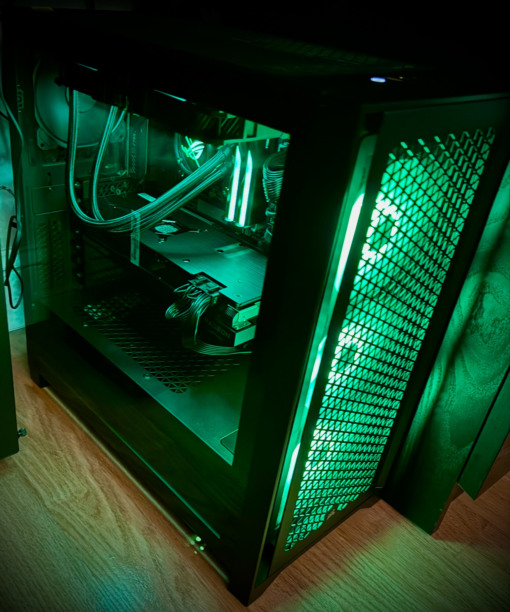
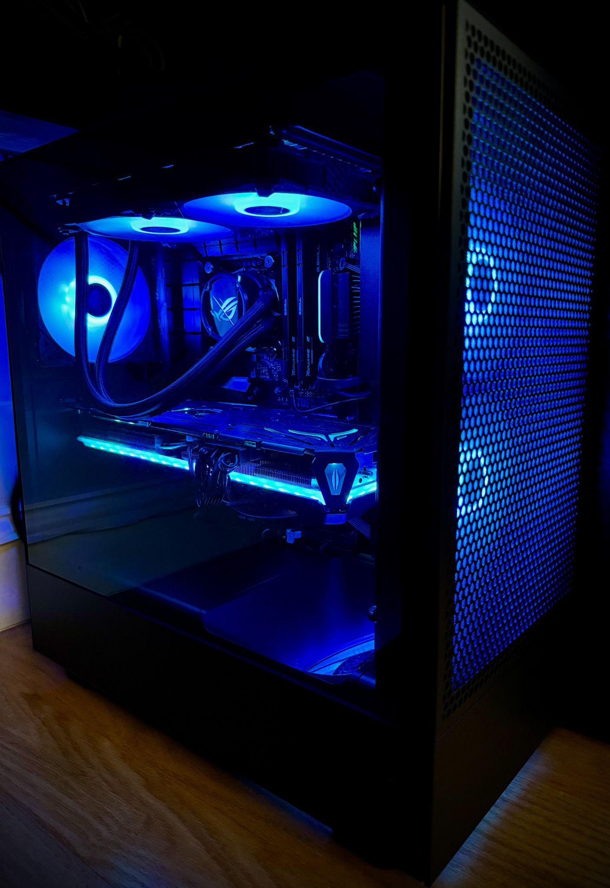
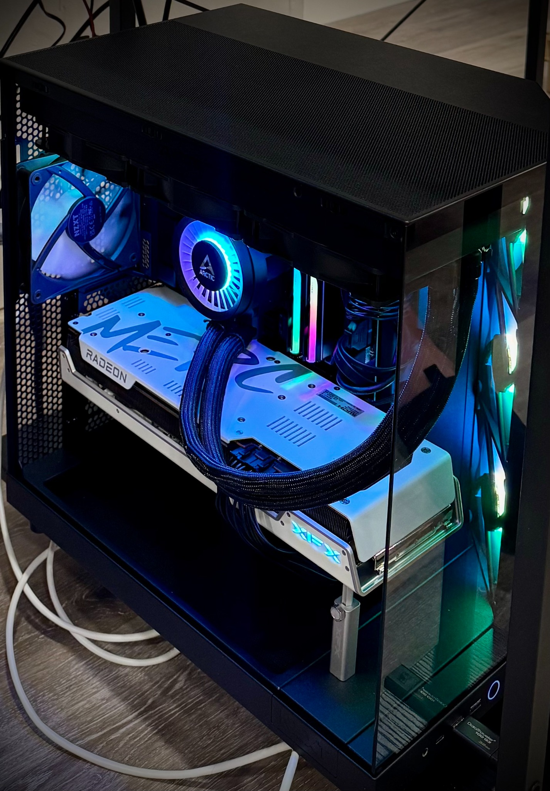
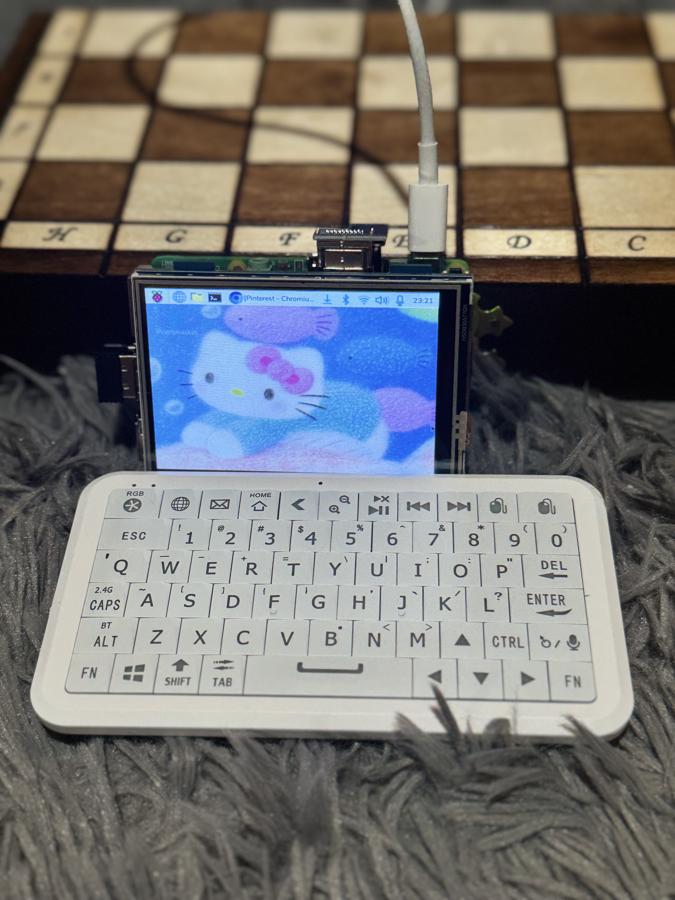

01
Investigate
Reproduce the issue, isolate variables, inspect hardware and software, and identify the most likely root cause.
I’m Michal, an Apple-certified technician and Information Technology student focused on hands-on troubleshooting, hardware repair, system configuration, and building reliable technology from the ground up.
My projects are centered on understanding why something fails, validating the cause, and choosing a solution that is practical and repeatable.
Reproduce the issue, isolate variables, inspect hardware and software, and identify the most likely root cause.
Test the suspected failure mode instead of relying only on symptoms, documentation, or assumptions.
Document the result, communicate the solution, and look for ways to make future troubleshooting more accurate and efficient.
Two examples from my work as an Apple technician where identifying an undocumented failure mode led to a better repair path.
Investigated an undocumented failure mode involving the 2021+ MacBook's Air Lid Angle Sensor behavior and its relationship to system operation.
The symptoms did not clearly point to the underlying sensor issue, making the failure difficult to diagnose through the existing support documentation.
I reproduced the behavior, compared symptoms across affected systems, isolated the lid angle sensor as the likely cause, and validated the failure pattern.
I escalated the findings to Apple's RTA Engineering team and provided the technical details needed to document the failure mode.
The solution contributed to an update of the support guidance and was adopted across a 21-store market, with recognition from leadership.
Identified an undocumented hardware failure that could cause a no-power condition on MacBook Air systems.
A failed trackpad flex connection could create symptoms associated with a much more serious logic board failure.
I connected the no-power symptoms to the trackpad flex assembly, reproduced the condition, and tested the suspected component path.
I validated flex replacement as an alternative repair path when appropriate, rather than immediately treating the logic board as the failed component.
The finding improved diagnostic accuracy and helped reduce unnecessary logic board replacement in applicable cases.
Outside of my professional work, I design and build desktop PCs for myself, friends, and family. These projects involve component selection, compatibility planning, physical assembly, cable management, BIOS configuration, operating-system setup, testing, and troubleshooting.

Designed around 1440p gaming performance, balancing CPU/GPU capability, cooling, power delivery, and component compatibility while staying within the intended budget.
My role: Component selection, compatibility planning, assembly, cable management, and BIOS/OS configuration.

Designed as my personal 1440p gaming system with emphasis on performance, thermal management, storage capacity, and a clean internal layout.
My role: Full system design, hardware selection and assembly, BIOS/OS configuration, cable management, optimization, and validation.

Designed around the Ryzen 7 7800X3D and RX 7900 XT to maximize gaming performance while maintaining appropriate cooling and power headroom.
My role: Platform selection, component compatibility, assembly, liquid-cooling installation, BIOS/OS configuration, and testing.
A collaborative hardware and software project I'm developing together with a friend. The project is currently in its early stages and will continue to evolve as we add new hardware, software, and features.

This project started as a shared idea between me and a friend to build a portable Raspberry Pi-based computer and explore the combination of custom hardware, software, and system configuration.
My professional experience has developed from device repair into broader technical investigation, documentation, mentoring, and systems thinking.
Diagnose and resolve complex hardware and software issues across Mac, iPhone, and iPad systems. Mentor technicians, handle escalated issues, apply Apple-certified repair procedures, and document technical findings.
Led technical repair operations across Apple, Samsung, and Google devices while working with laptops, desktops, smartphones, tablets, wearables, gaming systems, inventory, parts, and technician training.
Continuing to expand my foundation in information technology, systems, problem solving, and technical communication.
I’m interested in technical support, hardware, systems, troubleshooting, and IT opportunities where hands-on technical experience and analytical problem solving can make a difference.